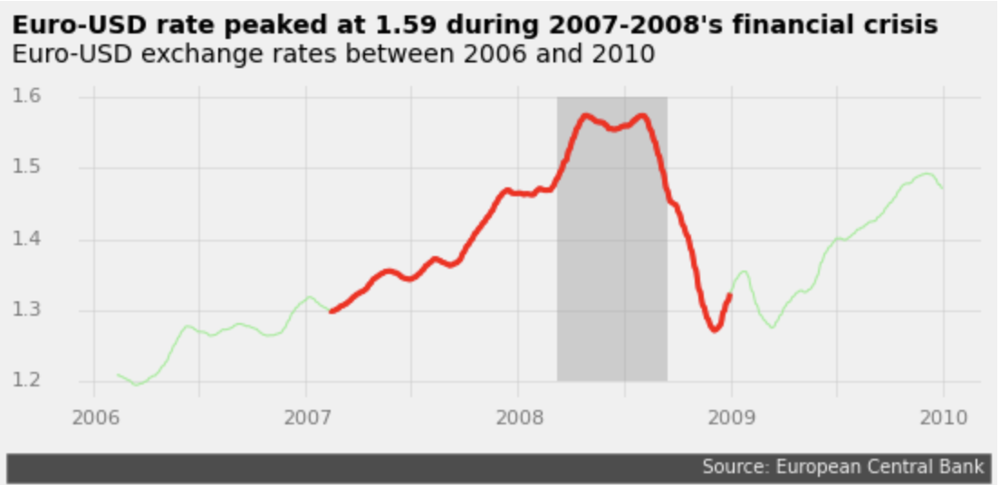

Euro Exchange Rate Visualization in Python
I looked at euro exchange rate data using the pandas library in Python to visualize how the euro-dollar exchange rate changed during the 2007-2008 recession.

The Python project code was written by me, Clay Whipp. It was done as part of a guided project through Dataquest, an online learning website. You can find the code for the project here.
In this project I looked at data on daily Euro exchange rates between 1999 and 2021. The Euro (€) is the currency used by most members of the European Union.
The data was compiled by Daria Chemkaeva and can be found here. The source of the data is the European Central Bank.
I first read in the CSV with the data as a dataframe using pandas. After some exploration, I found this dataset has 5699 rows and 41 columns. Certain currencies have null values. The date is type object. Some currency exchange rates are type object and others are float.
Next, I cleaned the data. I renamed and sorted certain columns, changed their data type, and reset the index. I selected just the date and US dollar columns, which is all I was interested in looking at. I deleted US dollar rows with the value '-', since I was only interested in rows with a numerical value. I also converted the US dollar column to type float.
I then found the a 30-day rolling mean of the US dollar data. The rolling mean data had 29 fewer values than before since the first 29 days there's not enough data to calulate a rolling mean.
Finally I created a plot of the euro-dollar rate from 2006-2009, highlighting the effect of the 2007-2008 recession. To do this I isolated the data from 2006-2009 and 2007-2008 and found a 30-day rolling mean for both. I used matplotlib to create the plot. I highlighted the recession years with a thicker red line, and the peak of the recession in 2008 with a darker grey box. I made sure to maximize the data-ink ratio, by only including necessary information in the plot, and made other elements less apparent like the background grid. Here is the final product:
The exchange rate slowly increases until peaking at 1.59 in 2008. At the end of 2008 it decreases sharply back down before rising again to around 1.5 at the end of 2009. An increasing exchange rate translate to a stronger euro and weaker dollar. So at the peak of the recession, the euro was quite strong in relation to the dollar. For further study, I could compare the euro to other currencies to see if similar trends occur, where the euro becomes stronger during 2007-2008.
In this project I learned how to better use pandas to select and clean data, and matplotlib to visualize data while maximizing the data-ink ratio.